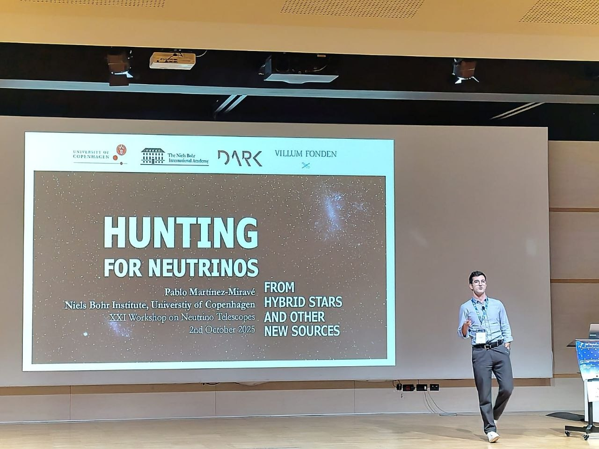
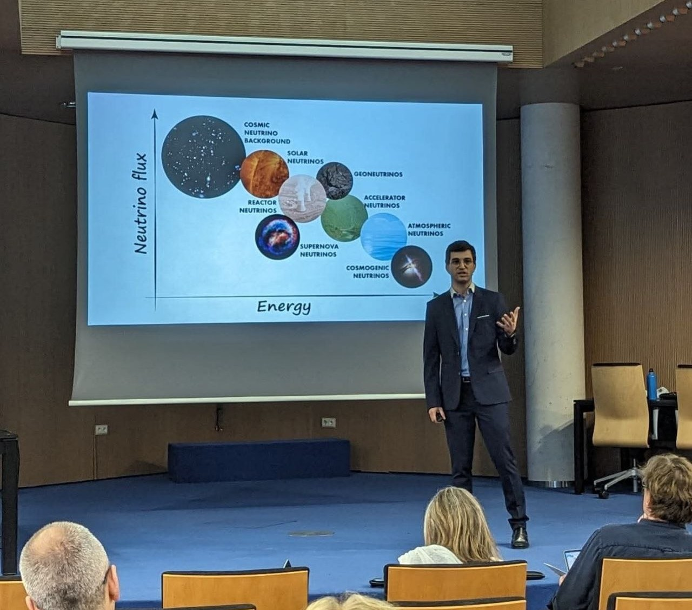

Postdoctoral Fellow
Niels Bohr Institute, University of Copenhagen
Research involving quantitative modelling, data analysis, scientific computing and collaborative problem solving at the intersection of particle physics and astrophysics.
I am a physicist with experience in quantitative and analytical modelling, data analysis, scientific computing, and collaborative multidisciplinary work.
My research background has taught me to approach unfamiliar problems from first principles, work with complex data and uncertainty, and develop robust solutions when there is no obvious path forward.
I am interested in bringing these skills to new challenges beyond fundamental physics — whether they involve data, technology, strategy, or something I have not encountered before.
Niels Bohr Institute, University of Copenhagen
Research involving quantitative modelling, data analysis, scientific computing and collaborative problem solving at the intersection of particle physics and astrophysics.
University of Valencia
PhD research on neutrino properties from the laboratory and the cosmos, involving mathematical modelling, numerical analysis, scientific programming, data interpretation and collaboration across institutions and disciplines.

Breaking complex questions into manageable pieces, identifying what matters, and developing structured approaches to unfamiliar problems.
Experience working with quantitative models, data, uncertainty, statistical analyses and numerical methods.
Experience developing and using computational tools for numerical modelling, simulation, data processing and scientific analysis.
Experience working in international collaborations with people from different countries, institutions and disciplines.
Experience communicating technical ideas to both specialist and non-specialist audiences through teaching, presentations, public engagement and science communication.
University of Valencia
Thesis: “Neutrino properties from the laboratory and the cosmos”
Graded excellent cum laude and International Mention. FPU Fellowship for PhD studies, Ministry of University.
University of Valencia
Specialised in Theoretical Physics. Extraordinary award of the master.
University of Valencia
Extraordinary award of the bachelor.
C/C++, Julia, Python, basic Mathematica, basic HTML5
GLoBES, CLASS, MontePython, BlackHawk
Microsoft Office, LaTeX, Adobe Illustrator, Adobe InDesign, Inkscape

Spanish Mother tongue
Catalan Fluent · C1 certified
English Fluent · C1 certified
French Fluent · C1 certified
I keep two versions of my CV depending on context: a professional version focused on skills and experience, and a full academic CV with publications, talks, teaching, outreach and academic service.